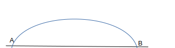

Suvat is an easy way to remember the components of movement. (in m)
S = displacement, which is the distance travelled ()
U = the initial velocity, which is the speed the object is going at from when it starts (in ms^-1)
V = the final velocity, which is the speed of the object at the end (in ms^-1)
A = the acceleration, which is the rate of increase in speed (in ms^-2)
T = the time it took (in seconds)
Suvat is all about finding out what you do and do not have. There are formulas which require a minimum of 3 of these values.
V=U+AT
V²=U²=2AS
S=T(U+V)/2
S=UT+0.5AT²
S=VT-0.5AT²
Once you have 3 of the SUVAT letters, you will pick the best suited equation
and subing in your values. SUVAT is your basic toolkit for movement in maths.
Example:
1) A train passes through the point A, with a velocity of 40ms^(-1) which is 100m away from point B.
i)being it took 2 seconds, what is the velocity at B?
Firstly we want to pick out the infomation we have. We know that
A to B is 100m. Drawing diagrams in maths is reall helpful.
A-------------------------50m------------------------B
U = 40, as it passes A. We want to find V as it passes B. The time is given as 2s
We must look for an equation with S, U, T and V in. This is S=T(U+V)/2
Re-arrange to make T the subject, (2S/T)-U=V
2(100)/2 - 40=V Therefore V = 60ms^(-1)
Projectiles use suvat equations, but require a bit more thought.
If a particle is projected upwards it has only one component, if it is projected across it has two, a vertical and a horizontal.
The above shows the projectile going up and down again.
We split it into two suvats, vertical and horizontal. With the Vertical we know that A=-9.8 when going up, and A=9.8 going down.
This is becuase of gravity. We know that when going up, the maximum velocity is 0, before falling back down.
With the horizontal we know that A=0 because there is no acceleration on a horizontal component.
T is the same for both, so can be made to equal eachother in order to use simultanious equations if needed.
---------
Example:
2) A particle is projected vertically upwards from point O with speed, u m/s. 2 seconds later it is still moving upwards
and it's speed is 1/3u m/s.
i)Find the value of u
We set out our SUVAT. S=?,U=u,V=1/3u,A=-9.8,T=2
Even though we only have two proper values, we can sub in the u in V=U+AT
1/3u=u-9.8(2)
-> -2/3u=-19.6
Therefore u = 29.4 m/s